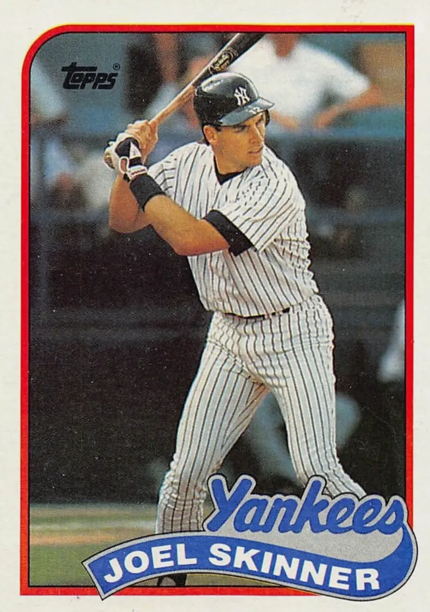

Joel Skinner
Career Highlights & Facts
(Facts are AI-generated and may require verification)
- Father, Bob Skinner, was a two-time MLB All-Star and 1960 World Series champion.
- Caught Joe Cowley's no-hitter on September 19, 1986.
- Served as interim manager for the Cleveland Indians for 76 games in 2002.
Would you like to find out more about Joel Skinner?
Career Totals
| WAR | AB | H | HR | BA | R | RBI | SB | OBP | SLG | OPS | OPS+ |
|---|---|---|---|---|---|---|---|---|---|---|---|
| -0.1 | 1441 | 329 | 17 | .228 | 119 | 136 | 3 | .269 | .311 | .580 | 60 |
Statistics via Baseball-Reference.com
The Original Clue